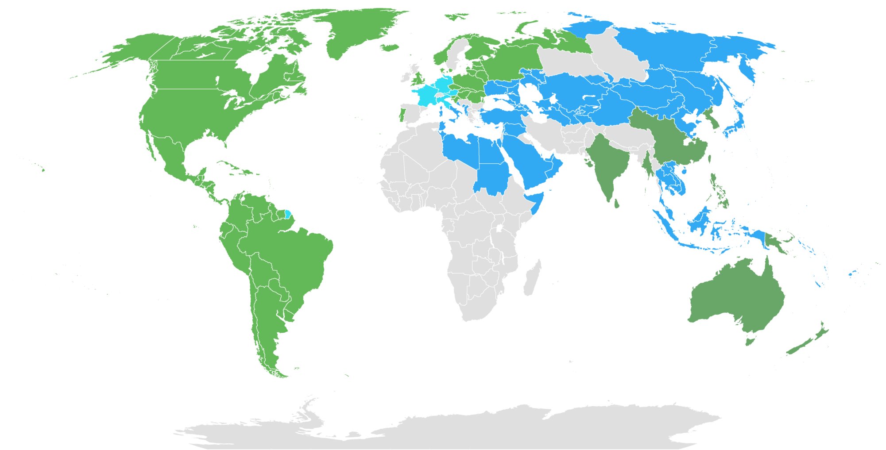

| Allies of World War III | |||||
| Military alliance | |||||
| |||||
 | |||||
| Capital | Not specified | ||||
| Political structure | Military alliance | ||||
| Historical era | World War III | ||||
| - | Established | 2051 | |||
| - | Disestablished | 2055 | |||

The Allies of World War III, were the countries that together opposed the Coalition forces during the Third World War (2051–2055). The Allies promoted the alliance as seeking to stop Turkish, and Japanese aggression.
The leaders of the "Big Four" – the United States, Poland, China, and Britain – controlled Allied strategy; relations between Britain and the United States were especially close.